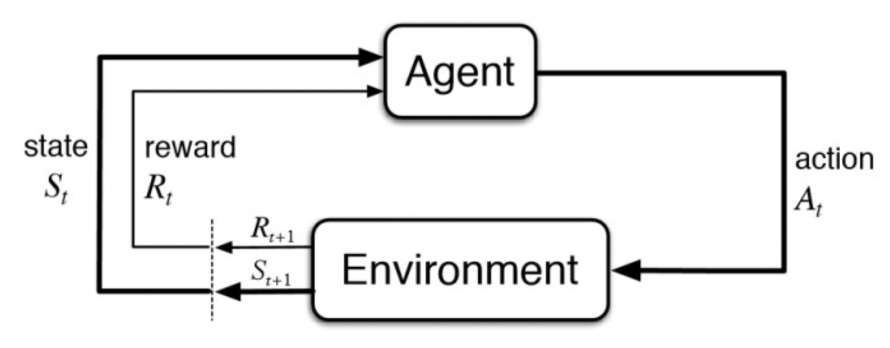
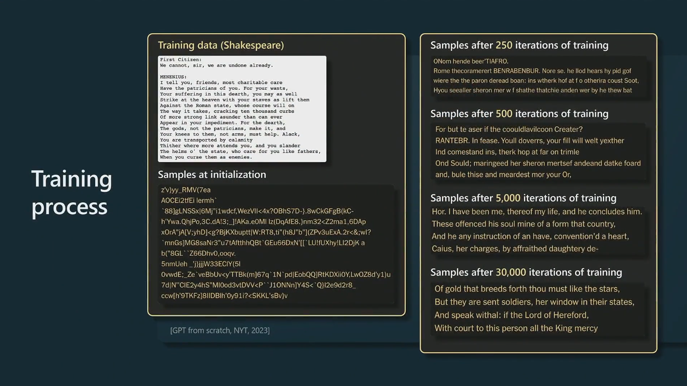
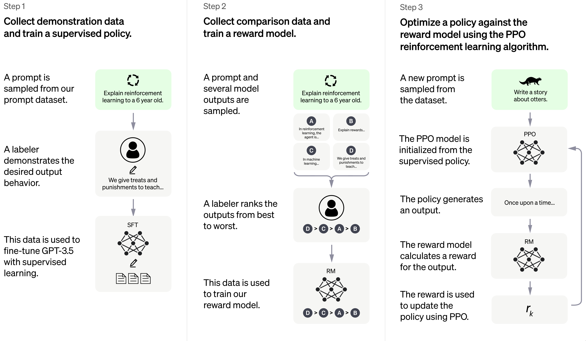
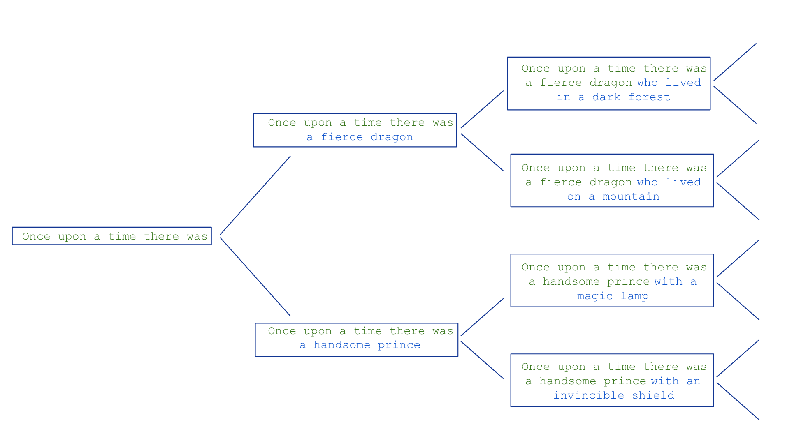

KI-Sprechstunde
Andrew Ellis
17 August, 2023
Here’s What Happens When Your Lawyer Uses ChatGPT
The Best Prompts For ChatGPT: The ultimate list
Inhalt
- Was ist künstliche Intelligenz?
- Was ist ChatGPT?
- Wie wurde ChatGPT trainiert?
- Energieverbrauch, Bias, Ethik
- Wie “denkt” ChatGPT?
- Zukünftige Verwendungen von LLMs
- Wissenschaftliches Arbeiten
- Case Study: Seminararbeit mit KI-Unterstützung
Was ist künstliche Intelligenz?
1 2 3 4 5 6 7 8
Was ist Künstliche Intelligenz?

Quelle: derbund.ch/so-funktioniert-kuenstliche-intelligenz-599276436215
Machine Learning
Regelbasierte Systeme müssen programmiert werden.
ML Modelle lernen implizit, d.h. ohne Regeln einprogrammiert zu bekommen.
Wichtige Begriffe:
- Trainingsdaten: Modelle werden mit Daten gefüttert, und Parameter des Modells werden so eingestellt, dass das Modell möglichst “gut” ist.
- Supervised learning: Aufgabe ist bekannt, z.B. Bilder - klassifizieren.
- Unsupervised learning: Unbekannte Muster entdecken.
- Reinforcement learning: Ziel ist vorgegeben, Modell lernt durch Feedback (Belohnung) wie Ziel erreicht werden kann.
We have to learn the bitter lesson that building in how we think we think does not work in the long run. We should stop trying to find simple ways to think about space, objects, multiple agents, or symmetries… instead we should build in only the meta-methods that can find and capture this arbitrary complexity. We want AI agents that can discover like we can, not which contain what we have discovered (Sutton 2019).
Supervised learning

Bilder von Hunden und Katzen klassifizeren: Was sind die Merkmale, die Hunde von Katzen unterscheiden?
Reinforcement learning

Was ist ChatGPT?
1 2 3 4 5 6 7 8
Natural Language Processing
- Speech recognition
- Text-to-speech synthesis
- Machine translation
- Information extraction
- Information retrieval
- Question answering
- Sentiment analysis
- üòä I love this movie!
- üòê This movie is ok.
- üò† This movie is terrible!
Tokenization

Quelle: State of ChatGPT
Embeddings
- Numerische Tokens werden in einem hochdimensionalen Vektorraum abgebildet.
- Distanz zwischen Vektoren misst Ähnlichkeit zwischen Tokens.


ChatGPT
Besteht aus 2 Modellen:
Large language model (LLM): GPT-3.5 oder GPT-4 (generative pre-trained transformer): das eigentliche Sprachmodell
Assistant: Ein für Dialoge spezialisiertes Modell
LLM
Aufgabe eines LLMs: “auto-regressive next word prediction” (eigentlich “token prediction”):
\[ P(w_{w+1} | w_1, w_2, ..., w_t) \]
- Das nächste Wort wird vorhergesagt, basierend auf den vorherigen Worten.
- Diese vorherigen Wörter werden als “context” bezeichnet.


Assistant
- LLM produziert Text, aber nicht menschliche Konversationen.
- Weiteres Training ist erforderlich, damit das Modell lernt, wie ein Mensch “Konversationen” zu führen.
Wie wurde ChatGPT trainiert?
1 2 3 4 5 6 7 8
Zusammenfassung
ChatGPT wurde in mehreren Schritten trainiert:
- Daten aus dem Internet werden gesammelt.
- Pre-training: LLM wird auf diesen Daten trainiert, das nächste Wort vorherzusagen.
- Reinforcement Learning from Human Feedback: Assistant wird trainiert, menschliche Konversationen zu führen.
Daten

Methoden

Pre-training

Pre-training
Reinforcement Learning from Human Feedback (RLHF)
Benutzt Feedback vom Menschen um “schlechte” Outputs zu minimieren.
Quelle: openai.com/blog/chatgpt
Energieverbrauch, Bias, Ethik
1 2 3 4 5 6 7 8
Zusammenfassung
- ChatGPT hat einen hohen Energieverbrauch.
- LLM lernt Vorurteile aus den Trainingsdaten.
- Toxische Inhalte werden durch Billigarbeiter:innen moderiert.
Energieverbrauch
Training: “What we do know is that training ChatGPT used \(1.287\) GWh, roughly equivalent to the consumption of 120 US homes for a year.” Quelle: Heating up: how much energy does AI use?
Patterson et al. (2022) schätzen die Trainingskosten auf 502 Tonnen \(\text{CO}_2\) (RLHF würde etwas mehr kosten, ca. 1% der ursprünglichen Kosten).
Benutzung: 7 Tonnen \(\text{CO}_2\) pro Tag (Ende Februar). Quelle: How much energy does ChatGPT use?
Der Energieverbrauch von ChatGPT ist equivalent zu 400-800 US Haushalten. Das ist beträchtlich, im Vergleich zu z.B. Kryptowährungen eher gering.
Bias
- Da LLMs von Texten lernen, die von Menschen geschrieben wurden, können sie auch Vorurteile lernen.
Quelle: Hast du Vorurteile?
Ethik
- Auf Grund der grossen Menge von Trainingsdaten, die für Sprachmodelle benötigt werden, ist Qualitätskontrolle schwierig.
- Diskriminierende oder beleidigende Aussagen werden von einem Chatbot generiert.
- Solche Antworten können als unerwünscht markiert werden.
- Toxische Inhalte wie körperliche und sexuelle Gewalt, Suizide und Tierquälerei, müssen beim Trainieren aus den Antworten gefiltert werden. Dabei mussten angestellte Arbeitskräfte für weniger als 2 Dollar die Stunde teils schockierende Inhalte lesen.
Quelle: Traumatische Klickarbeit
Wie “denkt” ChatGPT?
1 2 3 4 5 6 7 8
Wie generiert ChatGPT Text?
- LLM: Gegeben einer Input-Sequenz (Kontext) von Tokens (Wörter, Teile von Wörtern, Satzzeichen, Emojis, etc.), was sind die wahrscheinlichsten nächsten Tokens?
- Auto-regressiv: Ein Token wird generiert, wird dem Kontext hinzugefügt.

- Der neue Kontext wird verwendet, um das nächste Token zu generieren, etc.
- Wichtig: Jedes Token erhält gleich viel Zeit. Es gibt keine Tokens, die mehr oder weniger wichtig sind (Computation per Token ist konstant).
- Weil jedes Token gleich gewichtet wird, kann es an jeder Stelle im Output zu “ungünstigen” Pfaden führen.
Prompt
- Der ursprüngliche Kontext wird Prompt (Eingabetext) genannt.
- Dieser ist entscheidend für die Qualität der Antwort.
Prompt Beispiel
“Was ist 89322/1313?”
vs.
“Was ist 89322/1313? Arbeite Schritt für Schritt.”
Prompt

Role-Playing Simulator
We can think of an LLM as a non-deterministic simulator capable of role-playing an infinity of characters, or, to put it another way, capable of stochastically generating an infinity of simulacra.
Quelle: Shanahan, McDonell, and Reynolds (2023)
- Bei jeder Interaktion mit ChatGPT wird ein Dialog neu simuliert.
Role-Playing Simulator
Role-Playing Simulator
- Ein LLM ist keine Entität mit Handlungsabsichten, sondern ein Simulator von möglichen Konversationen.
- ChatGPT hat kein Konzept von Wahrheit, sondern generiert Antworten, die plausibel sind.
- Somit kann ChatGPT weder die Wahrheit sagen noch lügen - diese Konzepte sind für ein LLM vorerst irrelevant.
Was kann ChatGPT?


Weitere Beispiele: Bubeck et al. (2023)
Denkt ChatGPT?


System 1 vs System 2
System 1: schnell, instinktiv, automatisch
System 2: langsam, deliberativ, anstrengend

Prompt Engineering
Qualität der Antwort hängt sehr von der Qualität des Prompts ab.
2 Möglichkeiten, um die Qualität der Antworten zu verbessern:
- Incrementelle Prompts: Schritt für Schritt durch die Konversation führen (dialogisches Prompting).
- Mega-Prompts: Alle Informationen auf einmal geben.
Am besten selber ausprobieren.
Mega-Prompt
- Rolle: Wer oder was wird simuliert?
- Aufgabe: Was ist zu tun?
- Arbeitschritte: Was ist in welcher Reihenfolge zu tun?
- Kontext, Einschränkungen
- Ziel: Was soll am Ende herauskommen?
- Format: Wie soll das Ergebnis aussehen?
Beispiel Hochschullehre: Feedback
“I want you to act as a harsh critic. Criticize what I will write to you and show me where my argumentation is lacking. Start by asking me what text I want to have feedback on. Then ask me questions about my context to create the best feedback possible. If you feel you have all the context necessary, think step by step when creating your feedback” (Lenk-Ostendorf & Folgmann 2023)
Weitere Beispiele
- OpenAI Discord Server discord.com/invite/openai
- Prompting Guide
Zukünftige Verwendungen von LLMs
1 2 3 4 5 6 7 8
Plug-ins

Retrieval-augmented LLMs

Retrieval-augmented LLMs
Beispiel: üëâüèº Assistent der Virtuellen Akademie
Wissenschaftliches Arbeiten
1 2 3 4 5 6 7 8
Haltung der BFH
- Technologien sollen dort, wo sie den Lernprozess unterstützen und praxisrelevant sind, in die Lehre einbezogen werden.
- Studierende sollen lernen, Technologien kompetent einzusetzen und kritisch zu hinterfragen. Dies gilt uneingeschränkt auch für ChatGPT und andere gleichgerichtete Tools.
Zitieren
- Es existieren noch keine Richtlinien für das Zitieren von ChatGPT oder anderen KI-basierte Schreibtools.
- ChatGPT ist rein rechtlich keine zitierfähige Quelle und damit auch nicht zitierpflichtig (Fleck 2023).
- Aus der Orientierungshilfe: “KI-basierte Schreibtools sind externe Quellen und müssen daher im Sinne der wissenschaftlichen Integrität immer, wie andere Quellen auch, zitiert werden, sofern ganze Textpassagen von ChatGPT benutzt werden. Falls mit dem Tool der eigene Text überarbeitet wurde, muss ChatGPT als verwendetes Hilfsmittel angeführt werden.”
Möglicher Pauschalverweis
“Beim Verfassen der Arbeit habe ich das KI-gestützte Schreibwerkzeug ChatGPT zur Textoptimierung verwendet. Wörtlich aus dem Tool übernommene Passagen wurden im Text als persönliche Kommunikation zitiert.”
Plagiate und Detektion
- Texte von ChatGPT werden jedes Mal individuell erstellt. Es handelt sich nicht um Plagiate.
- Die klassischen Tools zur Aufdeckung von Plagiaten wie z.B. TurnItIn funktionieren hier nicht.
- Die BFH empfiehlt weiterhin, schriftliche Arbeiten mit der Plagiatserkennungssoftware Turnitin zu prüfen.
Kompetenznachweise
- Siehe KI-basierte Schreibtools in der Lehre – ChatGPT im Fokus
- Beim Benutzen von KI-generierten Texten in Kompetenznachweisen ohne Deklaration oder Zitierung kann von einem Plagiat im weiteren Sinne ausgegangen werden, welches das bisher etablierte Plagiatsverständnis im engeren Sinne erweitert.
- Open Book-Prüfungen: KI-Tools müssten explizit ausgeschlossen werden.
- Closed Book-Prüfungen: KI-Tools können durch Einsatz von Safe Exam-Browser und Lernstick ausgeschlossen werden.
- Schriftliche Arbeiten: KI-Tools durch pauschalen Hilfsmittelverweis am Ende der Arbeit deklarieren.
- Alternative oder ergänzende Prüfungsformen: praktische Prüfungen, mündliche Prüfungen, Präsentationen.
Rechtliche Aspekte
- ChatGPT kann keine Urheberschaft und keine Autorenschaft beanspruchen, da dies nur natürliche Personen können.
- Menschen können die Urheberschaft eines Textes beanspruchen, auch wenn sie auf Unterstützung durch ChatGPT zurückgegriffen haben – sofern sie eine wesentliche gestalterische Eigenleistung am Text erbracht haben.
Quelle: Salden (2023)
Datenschutz
- Anonyme Nutzung von ChatGPT ist mit persönlichen Konto nicht möglich (über Handynummer identifizierbar).
- Alle Eingaben und alle Antworten werden bei ChatGPT unverschlüsselt abgespeichert.
- Daten liegen auf amerikanischen Servern und sind damit für amerikanische Ermittlungsbehörden grundsätzlich zugänglich.
Case Study: Seminararbeit mit KI-Unterstützung
1 2 3 4 5 6 7 8
Seminararbeit mit KI-Unterstützung
Lehrperson: Kerstin Denecke, Technik und Informatik, Institut für Medizininformatik
- Elicit [Brainstorm research questions]: Idee für Forschungsfrage
- ChatGPT: Feedback zu Fragestellungen, Verbesserungsvorschläge
- Elicit [Abstract summary]: Rechercheunterstützung
- Consensus: Unterstützung für Belege in der Diskussion
ChatGPT Prompt
Verhalte dich wie eine wissenschaftliche Betreuungsperson in ihrer Sprechstunde. Du musst den aktuellen Stand meiner Hausarbeit überprüfen und kritisch beurteilen. Dazu evaluierst du meine Forschungsfrage und äusserst konstruktive Kritik in Bezug auf deren Stärken und Schwächen. Die Fragestellung lautet:
“Wie binden Therapeuten Chatbots in die Behandlung ein?”
References
Broschinski, Sebastian, Titus Plattner, Patrick Meier, and Patrick Vögeli. 2023. “In 9 Grafiken erklärt – So funktioniert künstliche Intelligenz.” Der Bund. June 10, 2023. https://www.derbund.ch/so-funktioniert-kuenstliche-intelligenz-599276436215.
Bubeck, Sébastien, Varun Chandrasekaran, Ronen Eldan, Johannes Gehrke, Eric Horvitz, Ece Kamar, Peter Lee, et al. 2023. “Sparks of Artificial General Intelligence: Early Experiments with GPT-4.” April 13, 2023. http://arxiv.org/abs/2303.12712.
Fleck, Tilmann. 2023. “Prüfungsrechtliche Fragen zu ChatGPT.”
Patterson, David, Joseph Gonzalez, Quoc Le, Chen Liang, Lluis-Miquel Munguia, Daniel Rothchild, David So, Maud Texier, and Jeff Dean. 2022. “Carbon Emissions and Large Neural Network Training.”
Salden, Peter. 2023. “Didaktische und rechtliche Perspektiven auf KI-gestütztes Schreiben in der Hochschulbildung.” Ruhr-Universität Bochum. https://doi.org/10.13154/294-9734.
Shanahan, Murray, Kyle McDonell, and Laria Reynolds. 2023. “Role-Play with Large Language Models.” May 25, 2023. https://doi.org/10.48550/arXiv.2305.16367.
Sutton, Rich. 2019. “The Bitter Lesson.” 2019. http://incompleteideas.net/IncIdeas/BitterLesson.html.
Wolfram, Stephen. 2023. “What Is ChatGPT Doing … and Why Does It Work?” February 14, 2023. https://writings.stephenwolfram.com/2023/02/what-is-chatgpt-doing-and-why-does-it-work/.